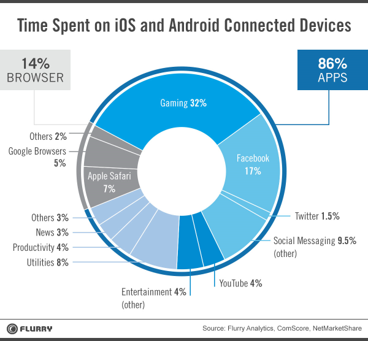

Androidify ME
AN Android Development Training Series
The Team
Girish.R
Mukesh.A iClub
Department of Computer Science and Engineering
MNM Jain Engineering College
Ping us Anytime !
R.Girish - +91-7299687990|facebook.com/Giribhai94
Mukesh.A - +91-8939083638|facebook.com/TheDracula
Mail us at wedodroidapps@gmail.com
What are we taking you through today ?
- Android : What is it ?
- Why Android ?
- Android : A Brief History
- The Rise of Applications
- The Architecture of Android
- Suiting up for the job !
- ABC's of an App
- Lifecycle of an App
- Structure of a Project
- Views and Stuff
- Playing around !
What Is Android ?
Android is an open source and Linux-based Operating System for mobile devices such as smartphones and tablet computers. Android was developed by the Open Handset Alliance, led by Google, and other companies. Android offers a unified approach to application development for mobile devices which means developers need only develop for Android, and their applications should be able to run on different devices powered by Android. The first beta version of the Android Software Development Kit (SDK) was released by Google in 2007 where as the first commercial version, Android 1.0, was released in September 2008
Why Android ??
- Major Market-Share
- Easiest Migration from any environment
- Most Developer-Friendly
- Android is OPEN SOURCE(Huge access benefits No Play store)
- Huge and Awesome support base
- And,Come on What possibly do Apple and Windows have to argue with all that ?
Android : Back to the Future !
The APPocalypse
Architecture-O-Android
Linux kernel
At the bottom of the layers is Linux - Linux 2.6 with approximately 115 patches. This provides basic system functionality like process management, memory management, device management like camera, keypad, display etc. Also, the kernel handles all the things that Linux is really good at such as networking and a vast array of device drivers, which take the pain out of interfacing to peripheral hardware.Libraries
On top of Linux kernel there is a set of libraries including open-source Web browser engine WebKit, well known library libc, SQLite database which is a useful repository for storage and sharing of application data, libraries to play and record audio and video, SSL libraries responsible for Internet security etc.Android Runtime
This is the third section of the architecture and available on the second layer from the bottom. This section provides a key component called Dalvik Virtual Machine which is a kind of Java Virtual Machine specially designed and optimized for Android. The Dalvik VM makes use of Linux core features like memory management and multi-threading, which is intrinsic in the Java language. The Dalvik VM enables every Android application to run in its own process, with its own instance of the Dalvik virtual machine. The Android runtime also provides a set of core libraries which enable Android application developers to write Android applications using standard Java programming language.
ART (Android RunTime) is the next version of Dalvik. Dalvik is the runtime, bytecode, and VM used by the Android system for running Android applications.
ART has two main features compared to Dalvik:
Ahead-of-Time (AOT) compilation, which improves speed (particularly startup time) and reduces memory footprint (no JIT)
Improved Garbage Collection (GC)
AOT means your apps are compiled to native code once. What is stored on your phone and run is effectively native, not byte, code. This differs from the traditional VM model, which interprets bytecode. Interpreters are slow, so VM developers added a technology called Just-in-Time (JIT) compilation, which compiles (and hopefully optimizes) your code to native code on-the-fly. Dalvik is a JIT'ing VM. The downside to JIT is that the JIT compiler runs while you are using your app, adding latency and memory pressure. The upside is that the JIT compiler can look at how you are using your code to perform profile-directed optimizations.
AOT is like JIT, but it runs once—say, at app installation time. While it lacks the ability to perform profile-directed optimizations, it is possible to perform more extensive optimizations since the compilation is less time sensitive. AOT is useful on systems, such as mobile devices, where JIT adds an unacceptable latency or memory cost to running apps. I think AOT is the right step for Android and ART looks quite impressive.
Application Framework
The Application Framework layer provides many higher-level services to applications in the form of Java classes. Application developers are allowed to make use of these services in their applications.Applications
You will find all the Android application at the top layer. You will write your application to be installed on this layer only. Examples of such applications are Contacts Books, Browser, Games etc.Lets Suit Up !
- Java Development Kit
- Android SDK
- An IDE compatible with Android Dev-Tools - Eclipse or Android Studio
Installing Android SDK
In order to start developing for Android you need the Software Development Kit. You can download it for Windows, Linux or for Mac OS X. Once downloaded you have to install it, on Windows just start the executable file.Installing Java JDK and Eclipse
The Java Development Kit is needed to develop Android applications since Android is based on Java and XML. Writing Android code is being done using an editor, the best supported ,and in my opinion, the best one around is Eclipse. Eclipse is an opensource freeware editor that is capable of supporting a wide range of programming languages.Installing the ADT Plugin
Once Eclipse is installed we need to connect the Android SDK with Eclipse, this is being done by the ADT Plugin. Installing this plugin is easily done using eclipse.
Start Eclipse. Navigate in the menu to Help > Install new software..
Press "Add..", in the new window that pops up you can fill in Name with an arbitrary name. A good suggestion could be-Android Plugin and in the location you have to paste :
1.https://dl-ssl.google.com/android/eclipse/
Click "Ok". Make sure the checkbox for Developer Tools is selected and click Next.
Click "Next'. Accept al the license agreements, click "Finish" and restart Eclipse.
To configure the plugin : choose Window - Preferences
Select "Android" on the left panel and browse for the Android SDK you downloaded in the first step. (On windows : C:\Program Files (x86)\Android\android-sdk)
Click apply and you are ready and ok !
Adding platforms and components
On windows, start the SDKManager.exe . Located in C:\Program Files (x86)\Android\android-sdk and install all platforms and components.The ABC's of App
The Secret Life of An App